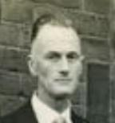
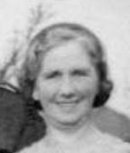

See also
- William HOWELL's other family: with Elizabeth Jane MACINTOSH (1889-1916)
- William HOWELL's parents: William Matthew HOWELL (1865-1930) and Florence Matilda DEELEY (1863-1941)
- William HOWELL's siblings: Frederick Charles HOWELL (1892-1965), Millicent MAY (1898- ) and Alice Lavinia HOWELL (1903-1909)
- Blodwen DAVIES's parents: George DAVIES (1864- ) and Rachel RUSHMER (1867- )
- Blodwen DAVIES's siblings: Elizabeth DAVIES (1889- ), Mary DAVIES ( - ) and Lucy Elvira DAVIES (1891?- )
Family of William Henry HOWELL and Blodwen Anne DAVIES
Husband:
Wife:
Blodwen Anne DAVIES (1890-1959)
Children:
Marriage:
27 Dec 1917
Cadoxton, Barry, Glamorganshire, Wales1
Address: The Parish Church
Husband: William Henry HOWELL

William Henry HOWELL, 1945, age 54
Name:
William Henry HOWELL
Sex:
Male
Father:
Mother:
Birth:
27 Dec 1890
Cadoxton, Barry, Glamorganshire, Wales2
Address: 64, Castleland Street
Residence:
6 Feb 1891 (age 0)
Cadoxton, Barry, Glamorganshire, Wales2
Address: 64, Castleland Street
Census:
5 Apr 1891 (age 3 mns)
Cadoxton, Barry, Glamorganshire, Wales3
Address: 64 Castleland St
Census:
31 Mar 1901 (age 10)
Barry, Glamorganshire, Wales4
Address: 41 Court Road
Census:
2 Apr 1911 (age 20)
Barry, Glamorganshire, Wales5
Address: 41 Court Road
Occupation:
2 Apr 1911 (age 20)
Boilermaker Apprentice; Barry, Glamorganshire, Wales5
Industry or Service with which worker is connected: Ship Repairing
Whether Employer, Worker, or Working on Own Account: Worker
Residence:
26 May 1913 (age 22)
Barry Dock, Barry, Glamorganshire, Wales6
Address: 41, Court Road
Occupation:
26 May 1913 (age 22)
Ship's Plater; Barry Dock, Barry, Glamorganshire, Wales6
Religion:
26 May 1913 (age 22)
Church of England6
Residence:
27 Dec 1917 (age 27)
Barry, Glamorganshire, Wales1
Address: Dunelm, Romilly Avenue
Occupation:
27 Dec 1917 (age 27)
Plater; Barry, Glamorganshire, Wales1
Census:
19 Jun 1921 (age 30 yrs 6 mns)
Barry, Glamorganshire, Wales7
Address: Dunelm, Buttrills Road
Occupation:
19 Jun 1921 (age 30)
Ship Repairing Plater; Barry, Glamorganshire, Wales7
Employment: Out of Work
Place of Work: Elliot V Jeffery Ship Repairers
Address:
1930 (age 39-40)
West Cross, Swansea, Glamorganshire, England
Address: 49 Druslyn Road
Occupation:
1935 (age 44-45)
Foreman boilermaker working in the ship repair yards in Swansea; Swansea, Glamorganshire, Wales
Census:
29 Sep 1939 (age 48)
West Cross, Swansea, Glamorganshire, England8
Address: 42 Druslyn Road
Occupation:
29 Sep 1939 (age 48)
Foreman boilermaker ship repair; West Cross, Swansea, Glamorganshire, England8
Occupation:
3 Sep 1945 (age 54)
Foreman Rivetter9
Witness:
3 Sep 1945 (age 54)
William Henry HOWELL witnessed the marriage of George Emerson HOWELL and Vera Jewell STILTS on 3 September 1945 in Harringay, Middlesex, England9
Death:
17 Jul 1983 (age 92)
Ringwood, Hampshire, England
Wife: Blodwen Anne DAVIES


Blodwen Anne DAVIES, 1942, age 52
Name:
Blodwen Anne DAVIES
Sex:
Female
Father:
Mother:
Birth:
13 Aug 1890
Roath, Cardiff, Glamorganshire, Wales10
Address: 137, Upper Keppock Street
Residence:
22 Sep 1890 (age 0)
Roath, Cardiff, Glamorganshire, Wales10
Address: 137, Upper Keppock Street
Census:
5 Apr 1891 (age 0)
Roath, Cardiff, Glamorganshire, Wales11
Address: 137 Keppoch Street
Census:
31 Mar 1901 (age 10)
Barry, Glamorganshire, Wales12
Address: 20 Kingsland Crescent
Residence:
27 Dec 1917 (age 27)
Barry Dock, Barry, Glamorganshire, Wales1
Address: 17, Kingsland Crescent
Census:
19 Jun 1921 (age 30 yrs 10 mns)
Barry, Glamorganshire, Wales7
Address: Buttrills Road
Occupation:
19 Jun 1921 (age 30)
Household Duties; Barry, Glamorganshire, Wales7
Census:
29 Sep 1939 (age 49)
West Cross, Swansea, Glamorganshire, England8
Address: 42 Druslyn Road
Occupation:
29 Sep 1939 (age 49)
Upaid domestic duties; West Cross, Swansea, Glamorganshire, England8
Death:
16 Jan 1959 (age 68)
Barry, Glamorganshire, Wales
Child 1: George Emerson HOWELL

Son: George Emerson HOWELL, 1922, age 0

Spouse: Vera Jewell STILTS, 1945, age 22
Name:
George Emerson HOWELL
Sex:
Male
Spouse:
Birth:
6 Nov 1922
Barry, Glamorganshire, Wales13
Occupation:
frm Aug 1939 to Oct 1939 (age 16)
Clerical Officer in the Ministry of Agriculture & Fisheries; Shoreditch, Middlesex, England14
Address: 80 Leonard Street
Leonard Street was ".. an old furniture warehouse in the Shoreditch area of London. It had been condemned for housing furniture (floors unsafe probably!) but was thought to be habitable for housing civil servants! It was a dreadful place and in a pretyy insalubrious area."
Residence:
Aug 1939 (age 16)
Tufnell Park, Middlesex, England15
Address: 142 Huddleston Road
Lodging house found through neighbours and friends in Swansea
Occupation:
frm Oct 1939 to Dec 1941 (age 16-19)
Clerical Officer in the Ministry of Agriculture & Fisheries; St Annes on Sea, Lancashire, England16
The ministry was evacuated to St Annes following the declaration of war.
Residence:
frm Oct 1939 to Dec 1941 (age 16-19)
St Annes on Sea, Lancashire, England
He lived at two different addresses in the town. The landlady of the second was Mrs. Farrimond
Miltary Service:
frm 4 Dec 1941 to Dec 1946 (age 19-24)
Service: Royal Signals
Detail: He served in Palestine, Italy and Egypt; reaching the rank of Captain by the time he was demobbed.
Residence:
3 Sep 1945 (age 22)
West Cross, Swansea, Glamorganshire, England9
Address: 42 Druslyn Road
Occupation:
3 Sep 1945 (age 22)
His Majesty's Forces; West Cross, Swansea, Glamorganshire, England9
Occupation:
1948 (age 25-26)
Civil Servant in the Ministry of Agriculture, Fisheries and Food.
Residence:
frm Oct 1971 to Oct 2003 (age 48-80)
Copthorne, Shrewsbury, Shropshire, England
Address: 66, Larkhill Road
Retirement:
c. 1980 (age 58)
Residence:
frm Oct 2003 to Jun 2016 (age 80-93)
Longden Coleham, Shrewsbury, Shropshire, England
Address: 23, Carline Crescent
Witness:
16 Jun 2010 (age 87)
George Emerson HOWELL witnessed the marriage of Gareth Henry HOWELL and Varina Helen NEWTON on 16 June 2010 in Huntingdon, Cambridgeshire, England
Death:
20 Jun 2016 (age 93)
Longden Coleham, Shrewsbury, Shropshire, England17
Cause: Old age
Address: 23 Carline Crescent
Cremation:
1 Jul 2016 (age 93)
Elmsley, Shrewsbury, Shropshire, England18
Address: Emsley Crematorium, London Road
Sources
- 1.
Marriage Cadoxton, Barry, Glamorganshire, Wales (The Parish Church) 27 Dec 1917 William Henry HOWELL & Blodwen Anne DAVIES, (203). A History of the Howell Family pt one Following the Main Line.
- 2.
Birth Cadoxton, Barry, Glamorganshire, Wales (64, Castleland Street) 27 Dec 1890 William Henry HOWELL, (362). A History of the Howell Family pt one Following the Main Line.
- 3.
1891 Census Entry for 63 Casteland St, Cadoxton, Galmorganshire, Wales, (RG12-4406-93-26). Custom Id: CENS-GB1891-WAL-GLAM-63_Casteland_Street; Cit. Date: 5 April 1891. General Register Office, Kew.
- 4.
1901 Census Entry for 41 Court Road, Barry, Glamorganshire, Wales, (RG13-4993-6-4). Custom Id: CENS-GB1901-WAL-GLAM-41_Court_Road; Cit. Date: 31 March 1901. General Register Office, Kew.
- 5.
1911 Census Entry for 41 Court Road, Barry Dock, Glamorganshire, Wales, (RG14-588-8-8-6). Custom Id: CENS-GB1911-WAL-GLAM-41_Court_Road; Cit. Date: 2 April 1911. General Register Office, Kew.
- 6.
Marriage Cadoxton, Barry, Glamorganshire, Wales (St Mary's) 26 May 1913 William Henry HOWELL & Elizabeth Jane MACINTOSH, (6). A History of the Howell Family pt one Following the Main Line.
- 7.
Census 1921 Barry, Glamorganshire, Wales RG15 26535 RD 588 RS 6 ED 10, (RG15 26535 RD 588 RS 6 ED 10). General Register Office, Kew.
- 8.
Register 1939 West Cross, Swansea, Glamorganshire, England RG101/7287K/004/7, (RG101/7287K/004/7).
- 9.
Marriage certificate of George Emerson HOWELL and Vera Jewell STILTS, 3 September 1945, Gareth Howell Archives.
- 10.
Birth Roath, Cardiff, Glamorganshire, Wales (137, Upper Keppock Street) 13 Aug 1890 Blodwen Anne DAVIES, (490). General Register Office, Kew.
- 11.
1891 Census Entry for 137 Keppock St, Roath, Cardiff, Glamorganshire, Wales, (RG12-4386-87-68). Custom Id: CENS-GB1891-WAL-GLAM-137_Keppock_Street; Cit. Date: 5 April 1891. General Register Office, Kew.
- 12.
1901 England and Wales census, 20 Kingsland Garden, Cadoxton, Barry, Glamorganshire, Wales, RG 13/4993, head of household: George Davies, Public Record Office.
- 13.
Findmypast England & Wales Births 1837-2006. Findmypast.co.uk. Web: www.findmypast.co.uk.
- 14.
"Reflections" - a very personal review by George Emerson Howell, circa 2011, Gareth Howell Archives, Part II The Second World War, P25.
- 15.
Ibid. Part II The Second World War, P26.
- 16.
Ibid. Section II The Second Waorld War p30.
- 17.
2016 Death Certificate for George Emerson Howell. Gareth Howell Archives.
- 18.
Shropshire Star.